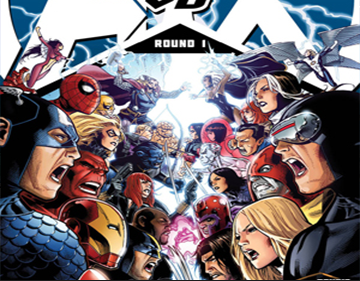

PLOT
Cable first attracts the attention of the Avengers by shooting down a prison transport plane. As the Avengers round up the escaping prisoners, Cable kidnaps the Falcon. Captain America follows Redwing to where Cable is holding the Falcon, only to be ambushed by Cable and put in restraints. Next, Cable defeats Iron Man using technology taken from a future suit of Iron Man's armor. Hulk arrives and surprises Cable, but is narrowly defeated when Cable infects him with the techno-organic virus.
Believing that Cable has gone too far, Blaquesmith sends in Cyclops and Hope to stop him. Cyclops and Hope plead with Cable to release the Avengers, but are interrupted by the arrival of Spider-Manand Wolverine While Cable is distracted fighting Spider-Man and Wolverine, Hope (guided by Blaquesmith) frees the captured Avengers, while the Red Hulk burns the techno-organic virus out of his body. Cable succumbs to the combined efforts of the Avengers and his own infection of the techno-organic virus, and is brought to Utopia. Blaquesmith tells Hope that she can still save Cable by absorbing the techno-organic virus with the Phoenix Force. Once fully healed, Cable informs Cyclops that Hope is indeed the Phoenix, and that he needs his help to protect her when war comes with the AvengersOur Avengers vs. X-Men
-
1Avengers vs. X-Men is a 2012 crossover event that was featured in comic books published by Marvel Comics.
-
2The event, consisting of an eponymous limited series and numerous tie-in books, involves the return of the Phoenix Force and the subsequent war between the Avengers and the X-Men.
-
3The 12-issue twice-monthly series was first published in April 2012, and features a storyline by Jason Aaron, Brian Michael Bendis, Ed Brubaker, Jonathan Hickman and Matt Fraction, with a rotating team of artists including John Romita, Jr., Olivier Coipel and Adam Kubert.
Core miniseries
In Washington D.C., MODOK Superior tries to assassinate an ex-A.I.M. scientist, but the scientist is saved by the Scarlet Witch with the help of Ms. Marvel and Spider-Woman. After the fight, Ms. Marvel invites the Scarlet Witch back to Avengers Mansion, but Vision turns her away for her actions in the Avengers Disassembled storyline. On Utopia, Hope Summers sneaks out to fight crime in San Francisco against Cyclops' wishes, where she stops the Serpent Society from robbing a bank. Cyclops and Emma Frost follow Hope to the scene, but she tells Cyclops that he need not be afraid for her safety, and that she is ready for the Phoenix Force when it comes.
A.Babies vs X.Babies
In Marvelous Meadows, as baby Steve Roger says good night to all of his teddy bears, he notices that baby Scott Summers from across the street has taken Bucky Bear. In response, Baby Steve assembles his fellow Avengers while Baby Scott brings together his team of X-Babies and the two teams fight in the middle of the street. After a series of turnovers, the Phoenix appears and demands that Baby Scott return Bucky Bear to Baby Steve. When he refuses, the Phoenix causes a giant explosion. The next morning, Baby Steve's parents find him sleeping peacefully with Bucky Bear, except now there is a giant hole in his room and a crater in the middle of the street.
Marvel Comics